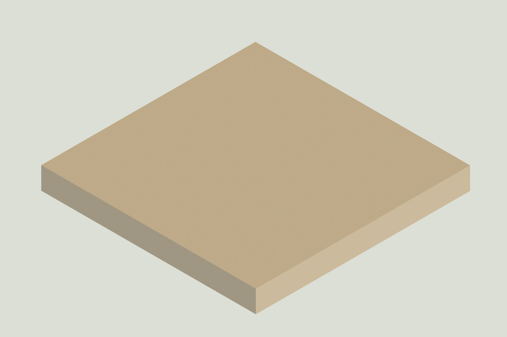
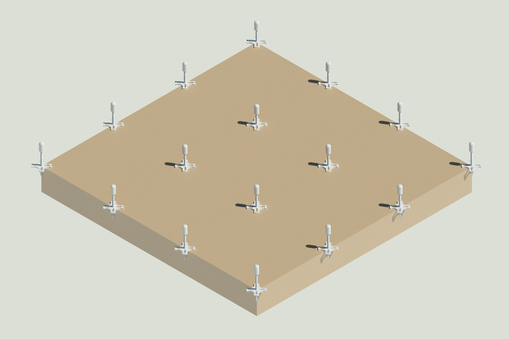
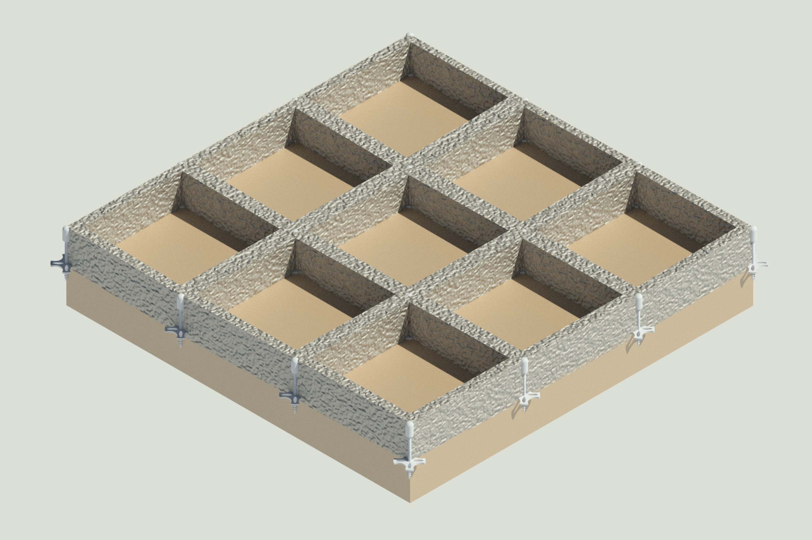
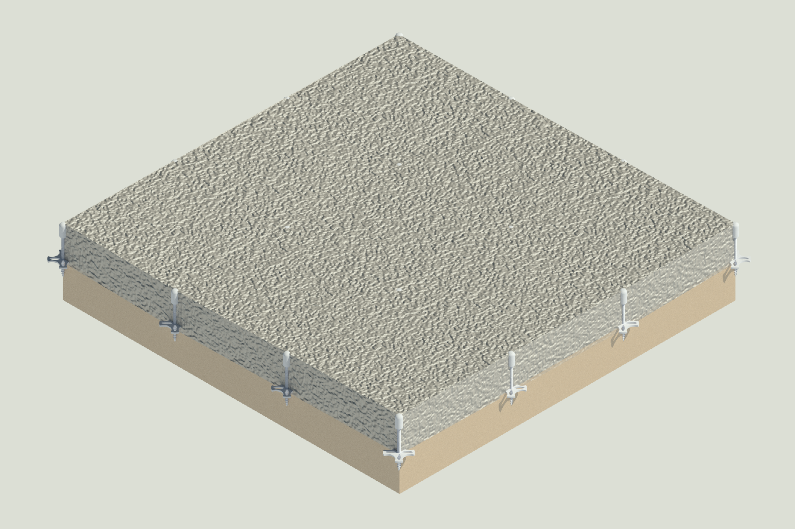
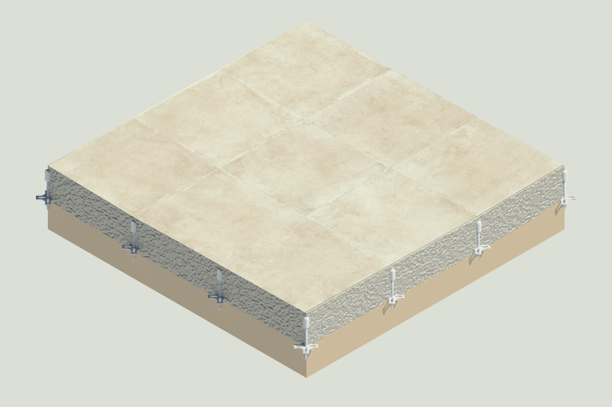
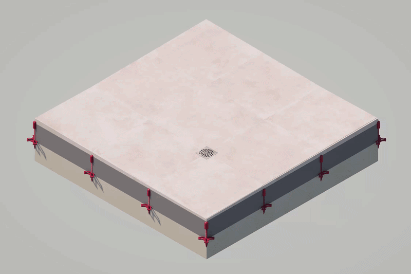

Le Pic à Pente en action
Découvrez étape par étape comment cet outil simplifie la pose de vos chapes et sécurise l'écoulement des eaux.






L'isolation au sol
Mise en place des plaques d'isolant thermique. C'est votre base de travail prête à être équipée.
Implantation des Pics à Pente
Le Pic à Pente se visse directement et solidement dans l'isolant. Vous ajustez la tête micrométrique au laser pour trouver votre niveau exact.
Pose de la trame
Mise en place de la trame de chape. Les Pics à Pente s'intègrent parfaitement à travers les mailles sans gêner votre préparation.
Tirage de la chape
Vous tirez votre chape sèche en vous calant sur les têtes des Pics à Pente. Ils restent définitivement noyés dans la masse : zéro outil à retirer, aucun trou à reboucher.
Revêtement final
Pose du carrelage. Le système est totalement invisible sous le revêtement final et garantit une pente parfaite du premier coup pour l'écoulement des eaux.